网关问题合集
1. 首要
在进行任何网关维护或故障排查之前，首先确认以下首要事项：
1.1 网关升级
升级网关前，请确认当前版本号，确保有可用的升级包。升级过程中请勿断电或断网，升级完成后需要验证服务是否正常启动。
1.2 网关重启
重启网关前，请确保所有正在进行的关键任务已完成。重启命令因系统不同而异：
# Linux系统
sudo reboot
# Windows系统
shutdown /r /t 02. 黑色设备(Debian)
黑色设备采用Debian Linux操作系统，主要用于视频网关服务部署。
2.1 产品
黑色设备为标准视频网关硬件设备，搭载Debian Linux系统，预装视频网关服务软件。
2.2 连接
使用XShell等SSH工具连接Linux设备。连接时需要设备的IP地址、用户名和密码。
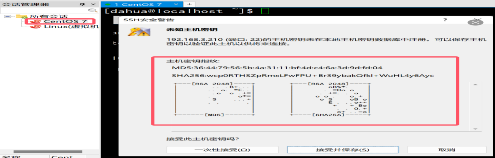
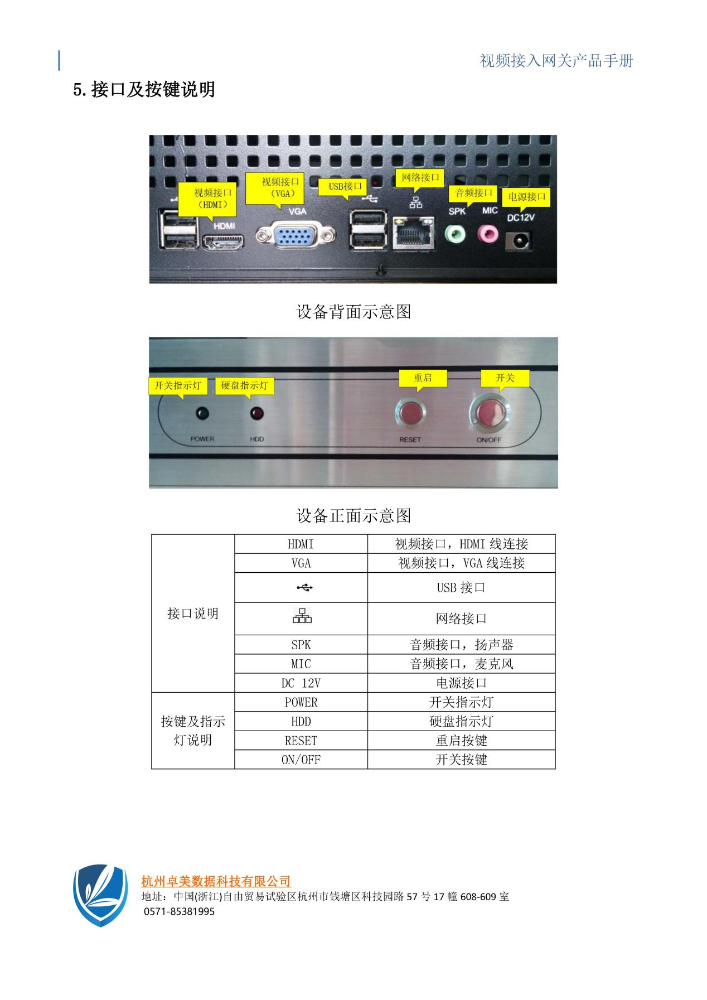
2.3 网页查看
通过浏览器访问设备的Web管理界面，可以查看设备状态、配置网络参数和管理服务。
2.4 U盘插入设备
将U盘插入设备的USB接口后，Debian系统通常会自动挂载。若未自动挂载，需手动执行挂载操作：
# 查看U盘设备
fdisk -l
# 创建挂载点并挂载
sudo mkdir -p /mnt/usb
sudo mount /dev/sdb1 /mnt/usb2.5 系统进入命令行
当设备连接了显示器和键盘时，可以直接进入命令行界面。若需要通过SSH远程连接，请使用XShell、Putty等工具。
2.6 清理内存
当设备存储空间不足时，需要清理日志文件和临时文件以释放空间。
清理日志文件命令：
sudo rm -rf /var/log/daemon.log && sudo rm -rf /var/log/syslog && sudo service rsyslog stop && sudo systemctl disable rsyslog清理完成后重启设备：
sudo reboot# 查看磁盘使用情况
df -h
df -i
# 删除崩溃报告
rm -rf /usr/local/sppvcell/plugins/DVM1G10504/CrashReport/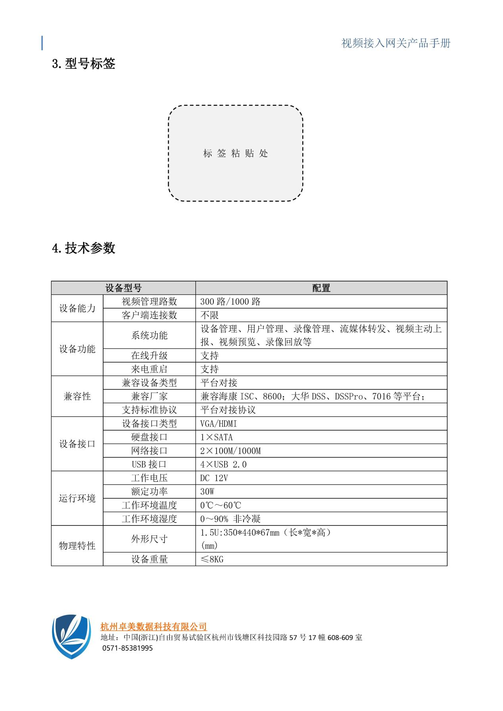
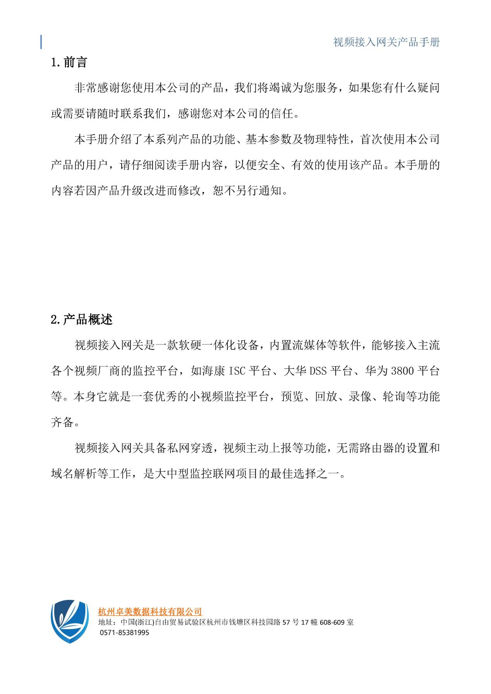
2.7 黑色debian升级
升级Debian系统上的视频网关软件，需要使用升级包和安装脚本。
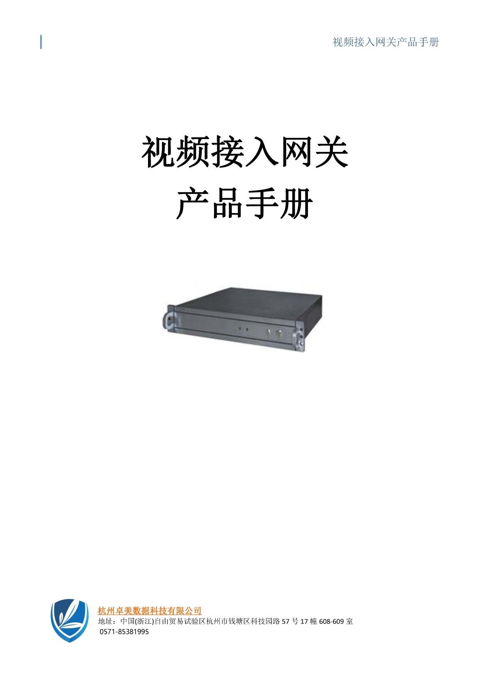
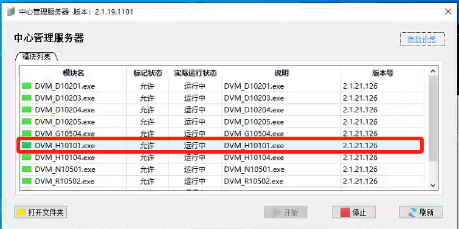
查看系统版本：
cat /etc/os-release执行升级命令：
sudo su root
chmod +x install_gateway.sh
./install_gateway.sh2.8 组织树导入
通过Web管理界面导入组织树结构数据，用于管理摄像头资源的层级关系。
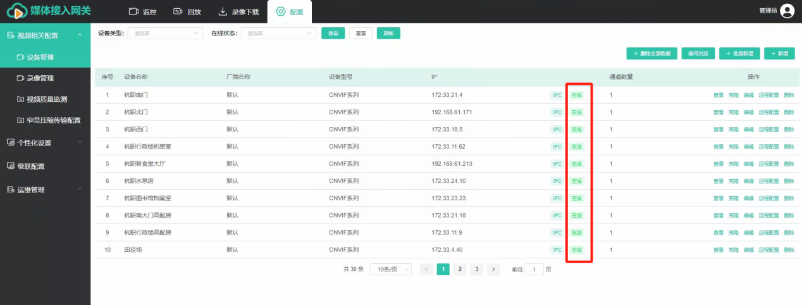
2.9 网络配置
配置设备的网络参数，包括IP地址、子网掩码、网关、DNS等。确保设备能够正常访问上级平台和网络。
# 查看网络配置
ip addr show
ip route show
# 编辑网络配置文件
sudo nano /etc/network/interfaces2.10 存储空间分配
使用GParted工具对磁盘分区进行扩容操作，以获得更多的可用存储空间。
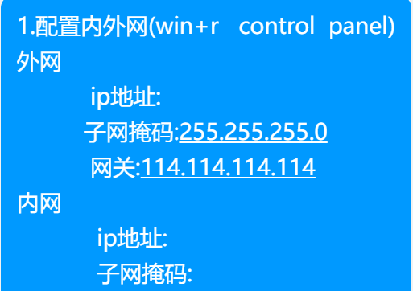
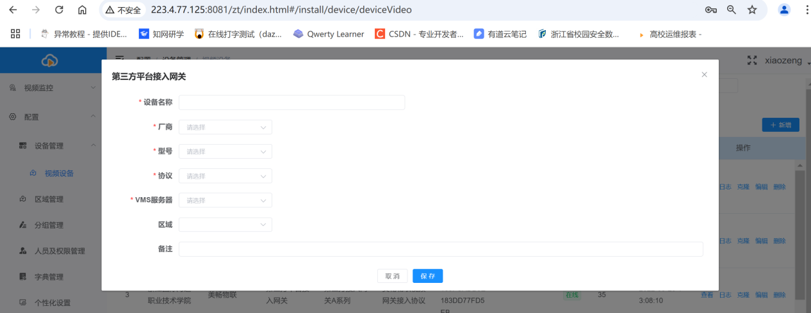
分区扩容步骤：
- 打开GParted工具
- 选择需要扩容的分区
- 调整分区大小
- 应用所有操作
安装必要的系统组件：
# 安装语言包和字体
sudo dpkg -i locales_*.deb
sudo dpkg -i fonts_*.deb
# 配置中文环境
sudo dpkg-reconfigure locales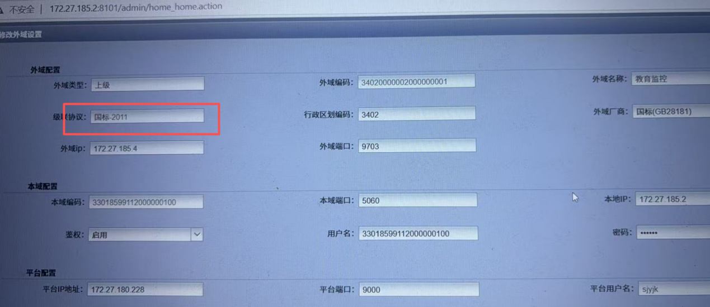
2.11 Debian系统文件
了解Debian系统中的关键目录结构和视频网关服务模块。
2.11.1 Linux目录结构
| 目录 | 说明 |
|---|---|
| /bin | 存放常用的基本命令，如ls、cp、mv等 |
| /boot | 存放系统启动时需要的文件，包括内核和引导加载程序 |
| /dev | 设备文件目录，Linux中一切皆文件 |
| /etc | 系统配置文件目录 |
| /home | 普通用户的家目录 |
| /lib | 系统运行所需的库文件 |
| /media | 可移动设备挂载点（如U盘） |
| /mnt | 临时挂载点 |
| /opt | 第三方软件安装目录 |
| /proc | 虚拟文件系统，存储进程和系统信息 |
| /root | root用户的家目录 |
| /run | 运行时数据 |
| /sbin | 系统管理命令，如fdisk、iptables |
| /srv | 服务数据目录 |
| /sys | 虚拟文件系统，存储设备和驱动信息 |
| /tmp | 临时文件目录 |
| /usr | 用户程序和数据 |
| /var | 可变数据文件，如日志、缓存 |
| /lost+found | 文件系统恢复目录 |
| /snap | Snap包管理目录 |
| /usr/local | 本地编译安装的软件 |
| /usr/share | 共享数据文件 |
2.11.2 VideoSVR模块列表
| 模块名称 | 说明 |
|---|---|
| DVM1G10504 | 视频网关核心服务模块 |
| NVRModule | NVR录像管理模块 |
| GBModule | 国标GB28181对接模块 |
| ONVIFModule | ONVIF协议接入模块 |
| RTSPModule | RTSP协议接入模块 |
| TranscodeModule | 转码模块 |
| RecordModule | 录像存储模块 |
| StreamModule | 流媒体分发模块 |
| AuthModule | 认证鉴权模块 |
| ConfigModule | 配置管理模块 |
| MonitorModule | 监控模块 |
| AlarmModule | 报警处理模块 |
| LogModule | 日志管理模块 |
| UpdateModule | 升级更新模块 |
| BackupModule | 备份恢复模块 |
| APIGateway | API网关模块 |
| WebModule | Web管理界面模块 |
| DBModule | 数据库管理模块 |
2.12 大华国标对接(浙江金融职业技术学院)
大华国标对接配置流程，以浙江金融职业技术学院为例。
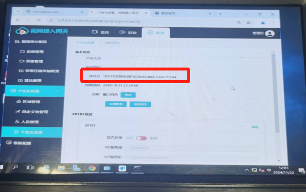
2.12.1 卓美接收 (国标推送)
配置国标推送参数：
- 上级域IP：由上级平台提供
- 上级域ID：34020000002000000001
- SIP服务端口：9703
- 鉴权账户：33010164112008283513
- SIP服务统一接入密码：123456
2.12.2 国标编码
按照国标GB/T 28181标准编码规则，为每路摄像头分配20位编码。编码规则：中心编码(8位) + 行业编码(2位) + 类型编码(3位) + 网络标识(7位)。
2.12.3 登录大华DH-AGS进行国标配置
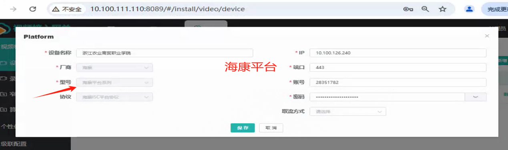
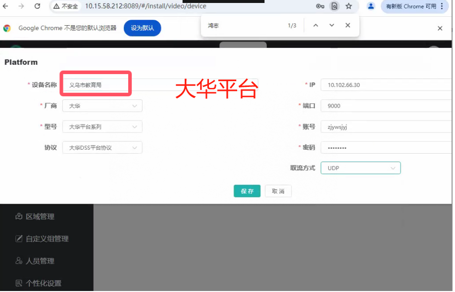
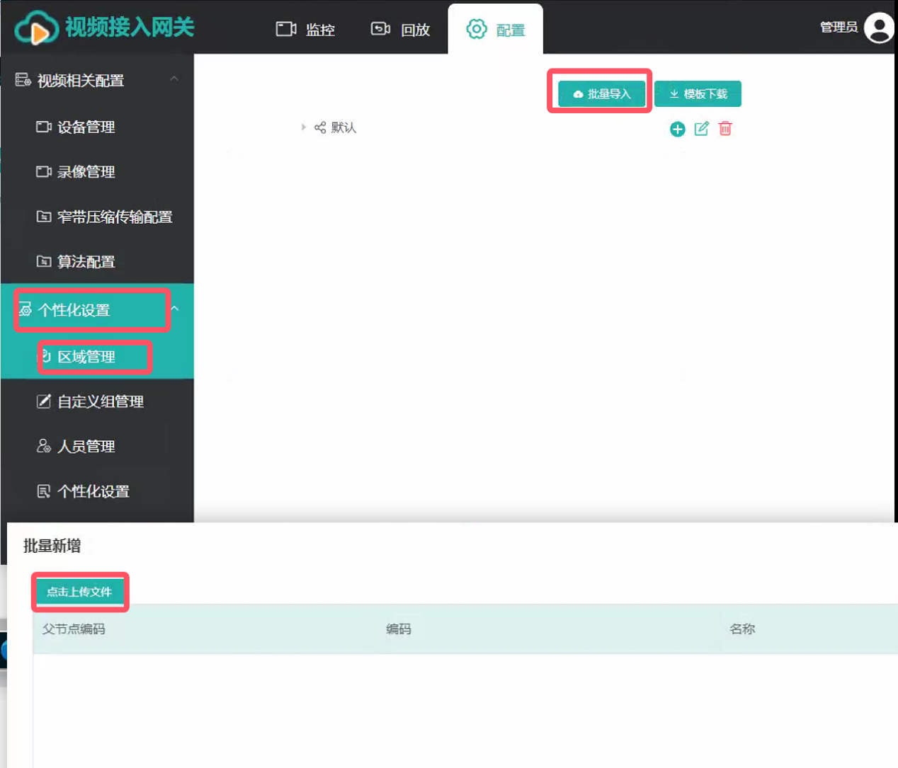
2.12.4 登录大华运维管理中心要修改唯一标识码
在大华运维管理中心中修改设备的唯一标识码，确保与国标编码一致。
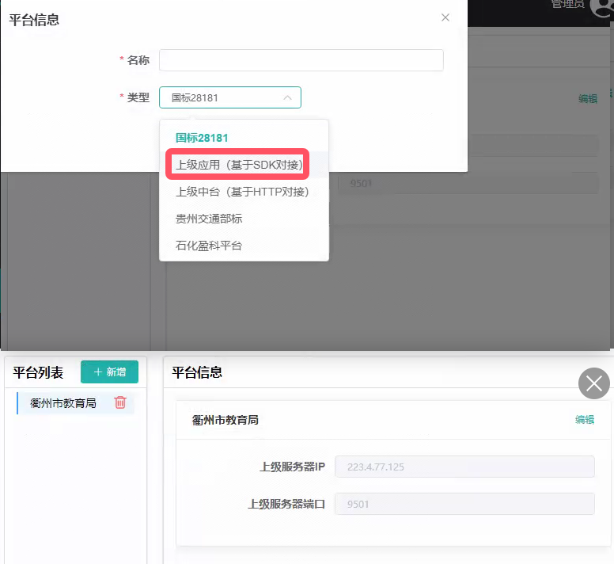
2.12.5 摄像头推送
将摄像头视频流通过国标协议推送到上级平台。
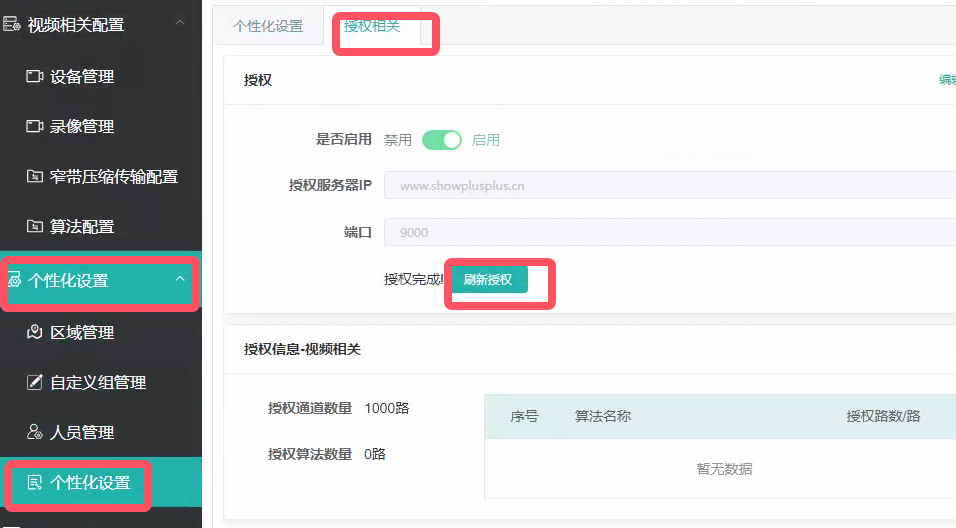
3. 银色设备
银色设备可能是CentOS 7或Windows系统的视频网关设备。
3.1 产品
银色设备为另一种规格的视频网关硬件设备，支持CentOS 7和Windows双系统。
3.2 设备管理口远程控制
通过设备的管理口进行远程控制操作。
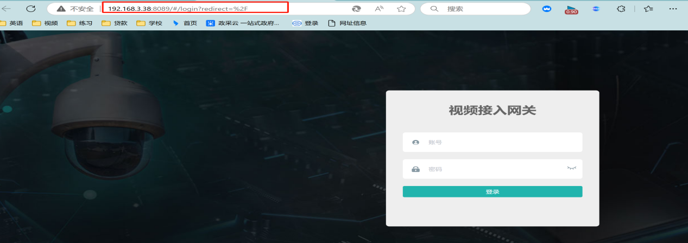
3.2.1 管理口连接
使用网线将电脑与设备的管理口连接，管理口通常位于设备的后面板。
3.2.2 IP设置
将电脑的网络设置为与设备管理口同一网段的IP地址。
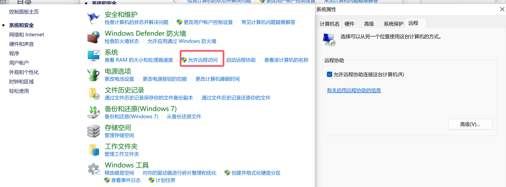
3.2.3 浏览器输入连接
在浏览器中输入设备管理口的IP地址进行连接。
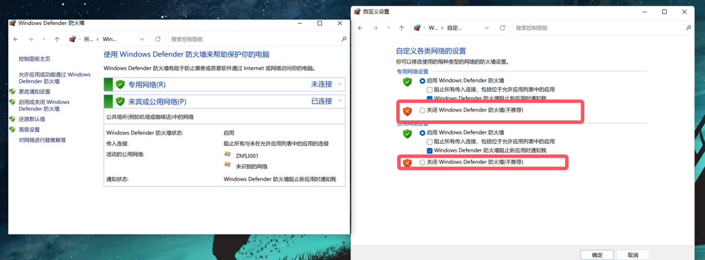
3.2.4 远程控制
通过Web界面进行设备的远程控制，包括电源管理、KVM控制等。
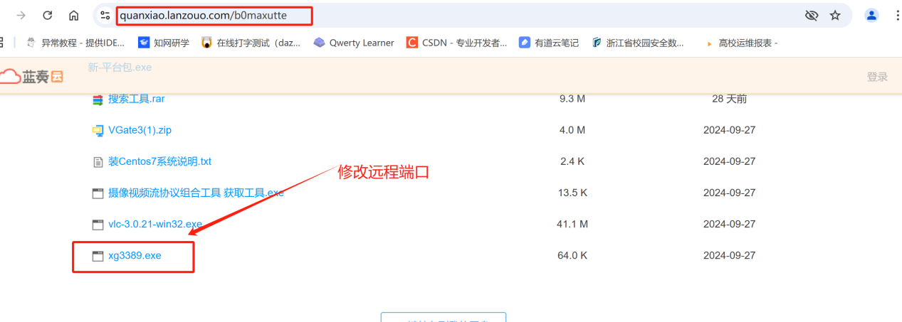
3.3 CentOS7系统
3.3.1 CentOS7忘记开机密码
如果忘记了CentOS 7的开机密码，可以通过以下步骤重置：
- 重启设备，在GRUB引导界面按 e 进入编辑模式
- 找到 linux16 行，将 ro 改为 rw init=/bin/sh
- 按 Ctrl+X 启动
- 进入单用户模式后执行 passwd 修改密码
- 执行 touch /.autorelabel (SELinux相关)
- 执行 exec /sbin/init 或 reboot -f 重启
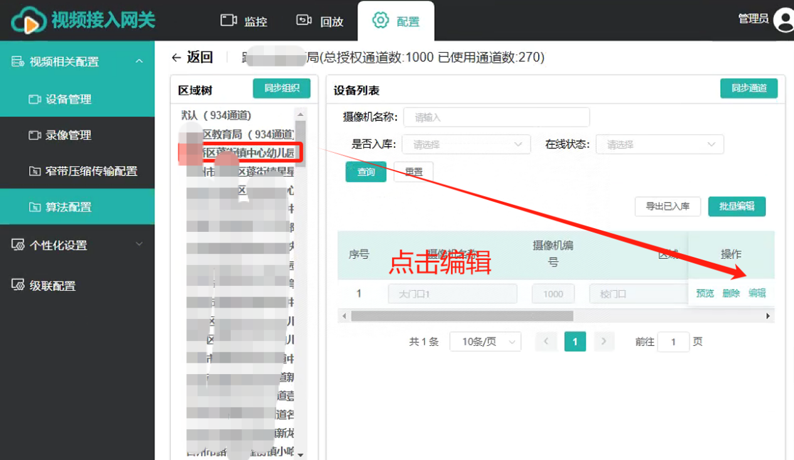
3.3.2 路由处理
配置CentOS 7的路由规则，确保设备能够正确访问内外网络。
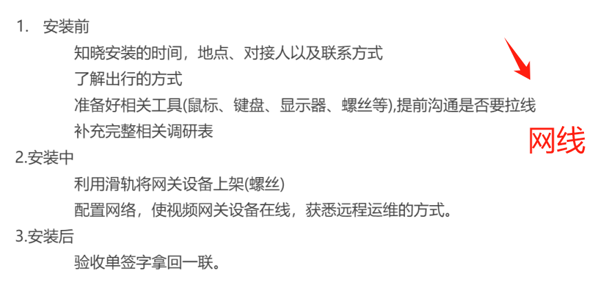
# 查看路由表
ip route show
# 添加静态路由
sudo ip route add 10.0.0.0/24 via 192.168.1.1
# 永久添加路由（编辑配置文件）
sudo vi /etc/sysconfig/network-scripts/route-eth03.3.3 安装向日葵
在CentOS 7上安装向日葵远程控制软件，方便远程维护。
# 下载向日葵安装包
wget https://sunlogin.oray.com/download/linux?id=2 -O sunlogin.rpm
# 安装
sudo rpm -ivh sunlogin.rpm
# 启动服务
sudo systemctl start sunloginclient
sudo systemctl enable sunloginclient3.4 Windows系统
3.4.1 忘记密码
如果忘记了Windows系统的登录密码：
- 重启设备，在开机时按 Del 进入BIOS设置
- 将U盘设置为启动项
- 在U盘中安装 WePE_64_V2.3.exe 微PE工具
- 通过PE系统修改Windows密码
3.4.2 升级
Windows系统升级需要运行两个升级包，两个都要执行。
链接1：https://talent666.lanzouu.com/b00wmug0mj 密码：1234
链接2：https://quanxiao.lanzouo.com/b0maxutte 密码：biyt
3.4.3 守护服务(Tray)
Windows系统上的守护服务(Tray)负责监控视频网关服务的运行状态，并在服务异常退出时自动重启。
3.4.4 文件位置
Windows系统下视频网关相关文件的默认安装路径。序列号数据来源于database中。
3.4.5 网页访问
通过浏览器访问设备的Web管理界面：
- 本地访问：127.0.0.1
- 教育局设备端口：8089
3.4.6 360处理
如果360安全卫士误杀了视频网关程序，需要将其加入白名单或恢复被删除的文件。
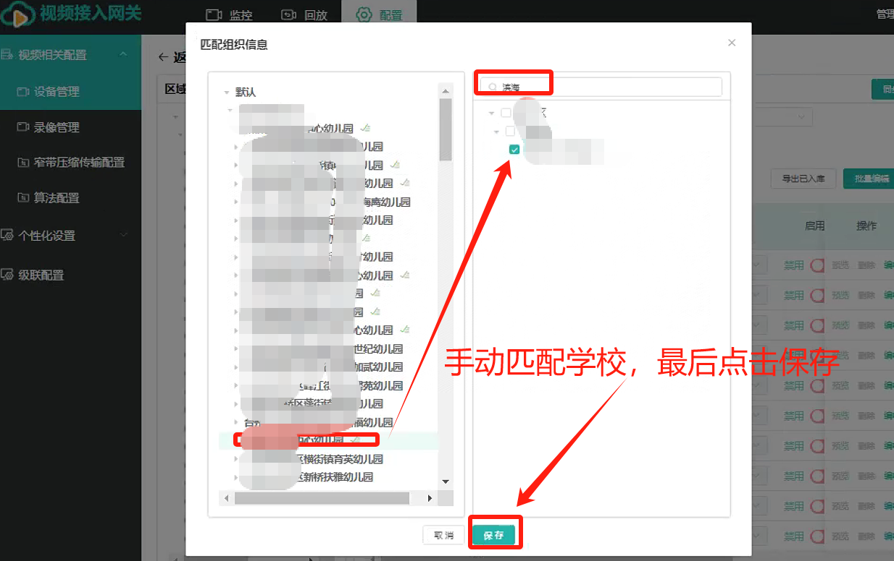
3.4.7 永久路由添加
在Windows系统中添加永久路由：
route add -p <目标网络> mask <子网掩码> <网关地址>示例：
route add -p 10.0.0.0 mask 255.255.255.0 192.168.1.13.4.8 文件含义
了解Windows系统下视频网关各文件和目录的含义。
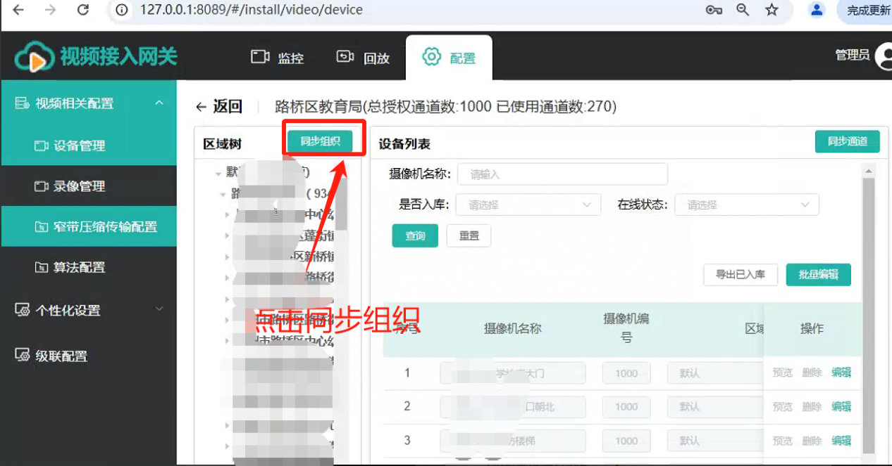
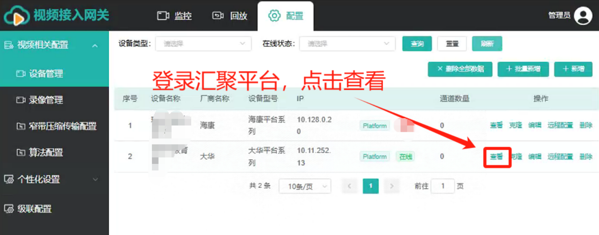
3.4.9 网页(Nginx)
Windows系统使用Nginx作为Web服务器，提供Web管理界面。
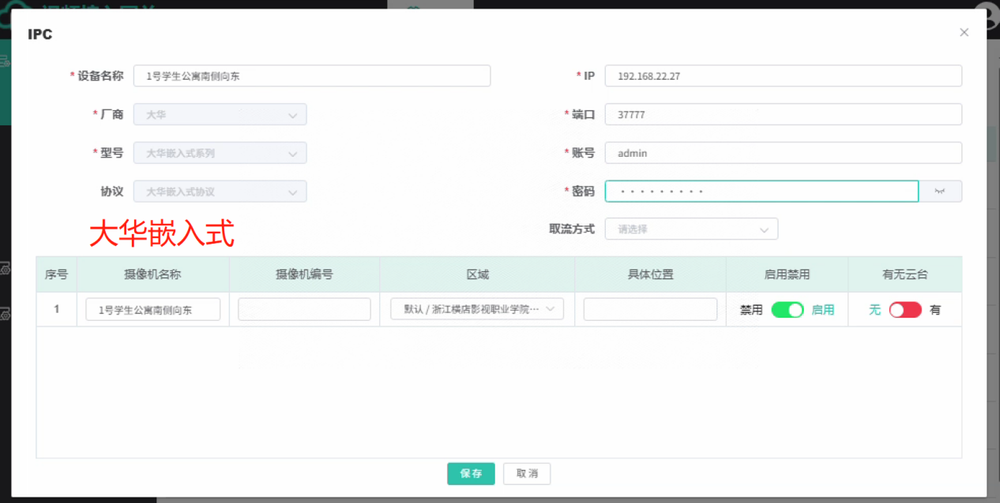
3.4.10 国标接入(大华DSS)
Windows系统下配置大华DSS国标接入。
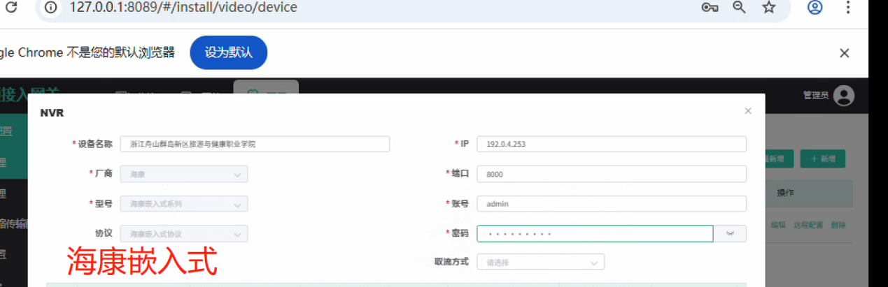
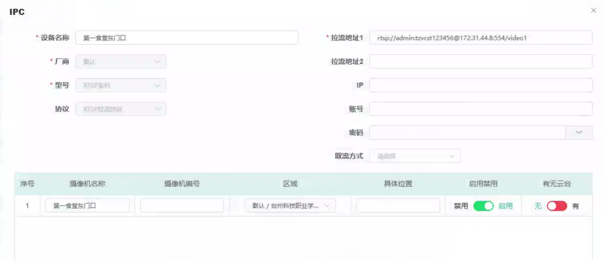
3.5 参数
银色设备的各项配置参数说明。
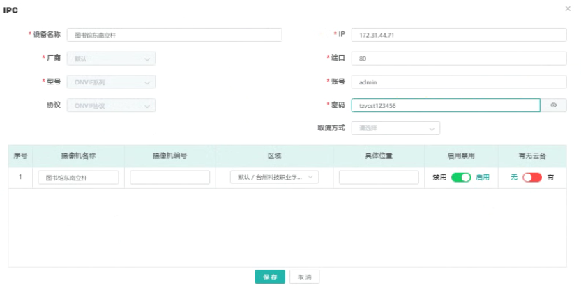
4. 数据网关
数据网关是一种专门用于数据传输和协议转换的网关设备。
4.1 产品
数据网关产品外观及接口说明。
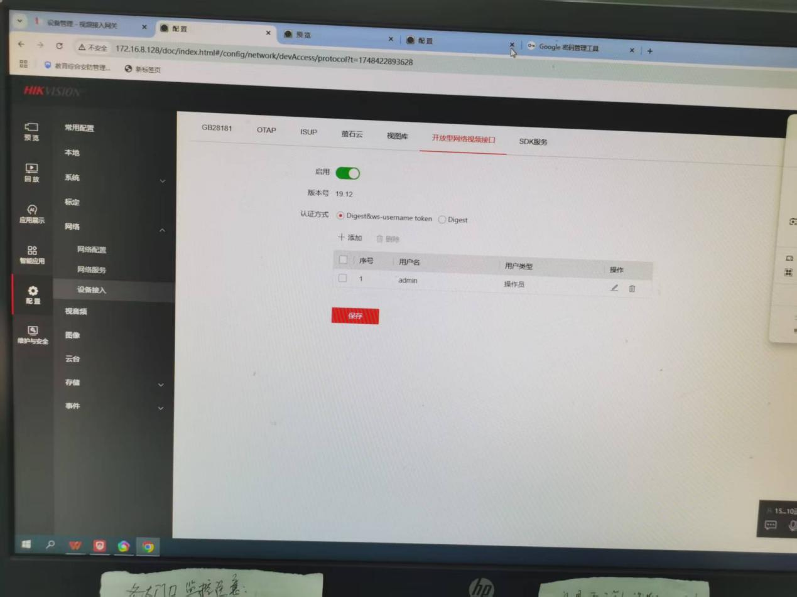
4.2 数据网关配置
4.2.1 SSH 安装与配置
安装并配置SSH服务以进行远程管理。
# 安装SSH服务
sudo apt install openssh-server
# 重启SSH服务
sudo systemctl restart sshd
sudo systemctl enable sshd4.2.2 密码修改
sudo passwd ubuntu
sudo passwd meichang4.2.3 开启Root远程访问
修改SSH配置文件以允许Root用户远程登录。
# 编辑SSH配置文件
sudo nano /etc/ssh/sshd_config
# 修改以下参数
PermitRootLogin yes
PasswordAuthentication yes
# 重启SSH服务
sudo systemctl restart sshd4.2.4 用户账户修改
# 终止用户进程
pkill -u username
# 修改用户信息
sudo usermod -l newname oldname
sudo usermod -d /home/newname -m newname
# 修改用户组
sudo groupmod -n newgroup oldgroup4.2.5 主机名修改
# 临时修改
sudo hostname new-hostname
# 永久修改
sudo nano /etc/hostname
sudo nano /etc/hosts4.3 重新安装桌面
4.3.1 GNOME桌面无法恢复
当GNOME桌面无法恢复时，可以先卸载GNOME再安装XFCE桌面环境：
# 第一步：卸载GNOME桌面
sudo apt-get remove --purge gnome-shell gnome-desktop3-data
sudo apt-get autoremove --purge
# 第二步：安装XFCE桌面
sudo apt-get update
sudo apt-get install xfce4 xfce4-goodies
# 第三步：设置默认桌面环境
echo "startxfce4" > ~/.xsession
# 第四步：重启
sudo reboot5. Linux常见桌面环境
Linux系统常见的桌面环境对比：
| 桌面环境 | 说明 | 特点 |
|---|---|---|
| GNOME | Ubuntu/Fedora默认桌面 | 简洁现代，操作直观 |
| XFCE | 轻量级桌面环境 | 资源占用低，速度快 |
| KDE | 功能丰富的桌面 | 高度可定制，类似Windows体验 |
| Unity | Ubuntu旧版默认桌面 | Canonical开发，已停止维护 |
| MATE | GNOME 2的分支 | 传统桌面布局，经典操作方式 |
| Cinnamon | Linux Mint默认桌面 | 传统与现代结合，易于使用 |
| LXQt | 轻量级Qt桌面 | 极低资源占用 |
| Deepin DDE | 深度操作系统桌面 | 美观精致，本土化好 |
6. 摄像头
摄像头的配置、接入和管理。
6.1 视频编码标准
常见的视频编码标准：
- H.264/AVC：最广泛使用的视频编码标准，兼容性好，压缩率适中。大部分摄像头和播放设备都支持。
- H.265/HEVC：新一代视频编码标准，在相同画质下比H.264节省约50%的带宽和存储空间。但兼容性相对较低，部分老旧设备可能不支持。
6.2 获取海康平台的AKSK
从海康运管中心获取Access Key(AK)和Secret Key(SK)。
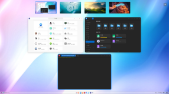
获取步骤：
- 登录海康运管中心
- 进入开发者设置/密钥管理页面
- 创建或查看AK/SK密钥对
- 妥善保存密钥信息
6.3 海康寻找IP
使用海康工具搜索局域网内海康摄像头的IP地址。
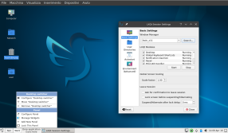
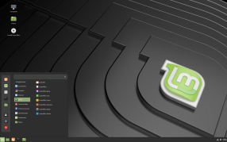
6.4 视频接入四种方式
视频网关支持四种摄像头接入方式：
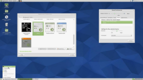
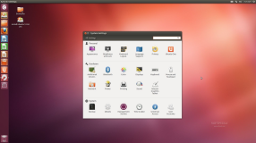
6.4.1 方式一：GB28181
通过国标GB28181协议接入摄像头，适合大规模、跨平台的视频联网。
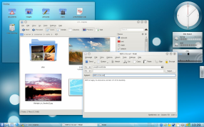
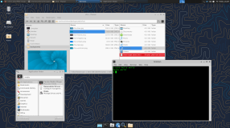
- 上级域IP：由上级平台提供
- 上级域ID：34020000002000000001
- SIP服务端口：9703
6.4.2 方式二：ONVIF
通过ONVIF协议接入摄像头，适用于支持ONVIF标准的大部分品牌摄像头。
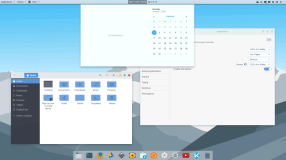
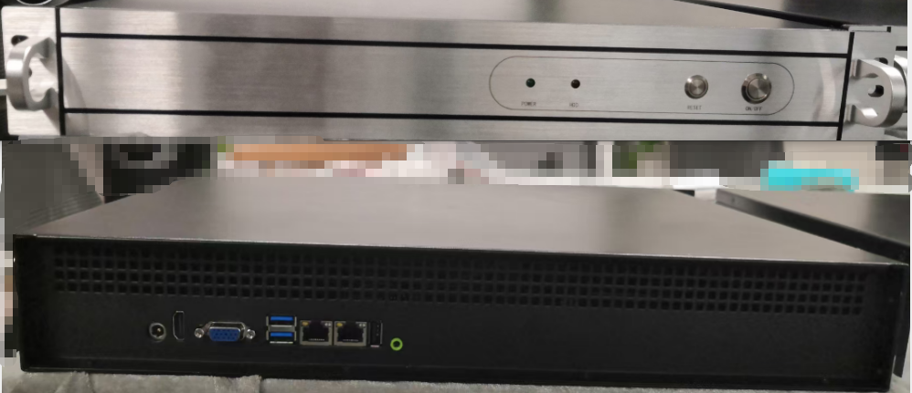
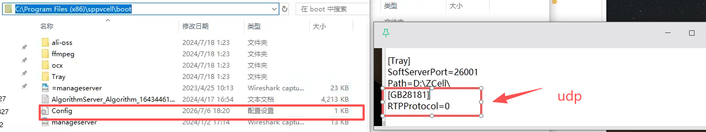
6.4.3 方式三：RTSP
通过RTSP协议直接拉取摄像头的视频流。
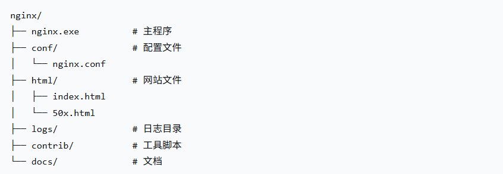
常见品牌RTSP地址格式：
# 宇视(Uniview)
rtsp://用户名:密码@IP地址/video1
# 海康(Hikvision)
rtsp://用户名:密码@IP地址/Streaming/Channels/101
# 大华(Dahua)
rtsp://用户名:密码@IP地址/cam/realmonitor?channel=1&subtype=06.4.4 方式四：嵌入式
嵌入式接入方式，将摄像头SDK嵌入到网关系统中。
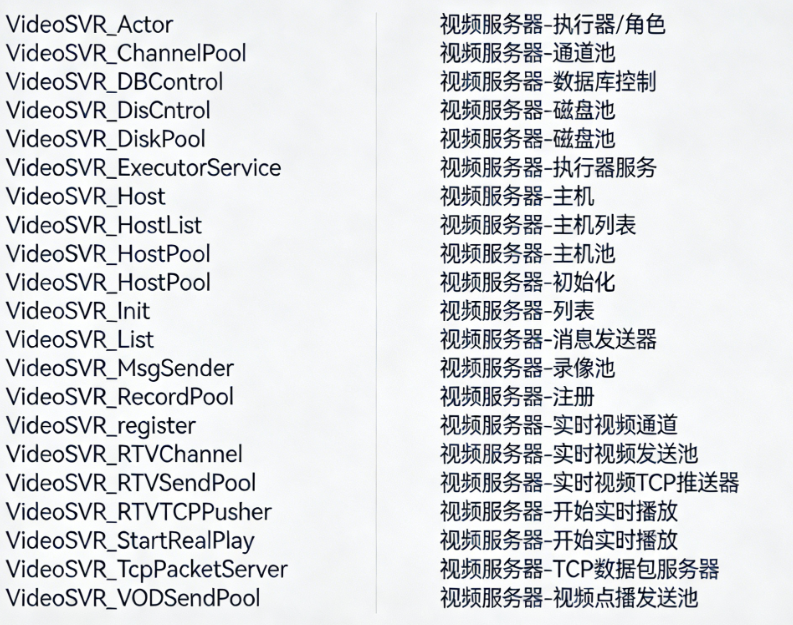
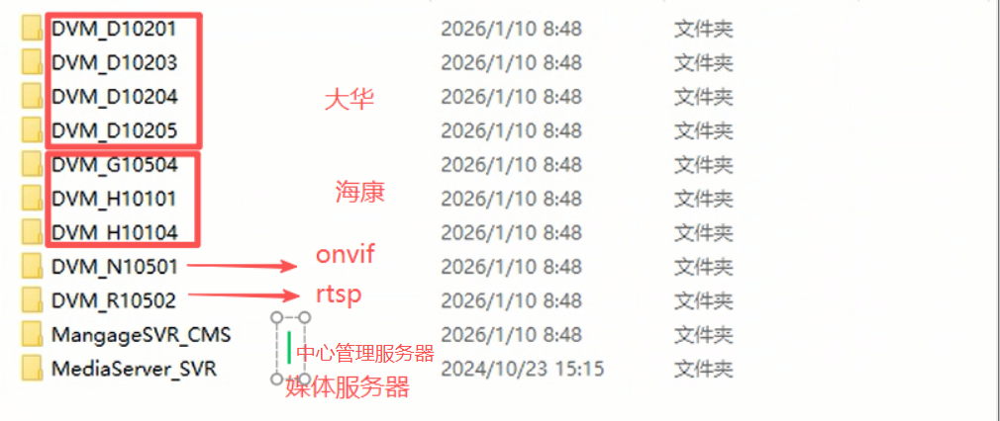
6.5 摄像头添加
在视频网关Web管理界面中添加摄像头的操作步骤。
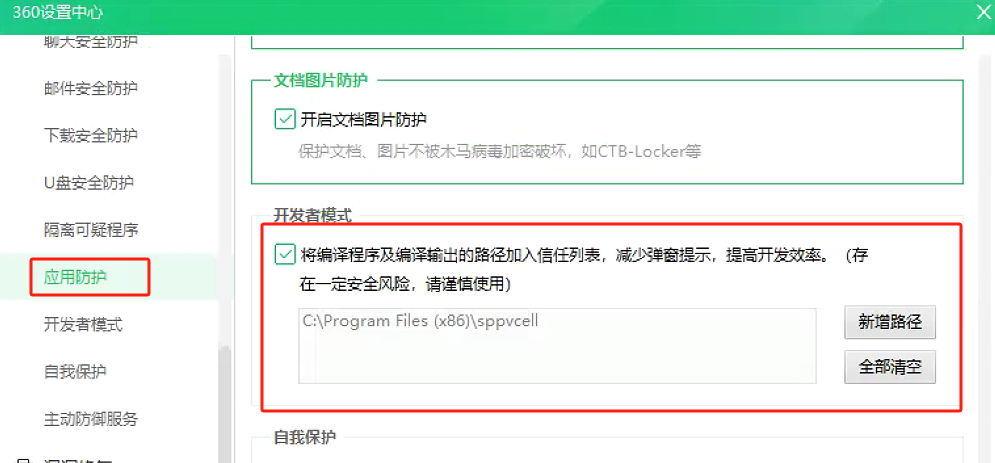
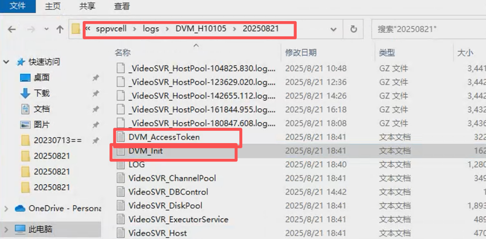
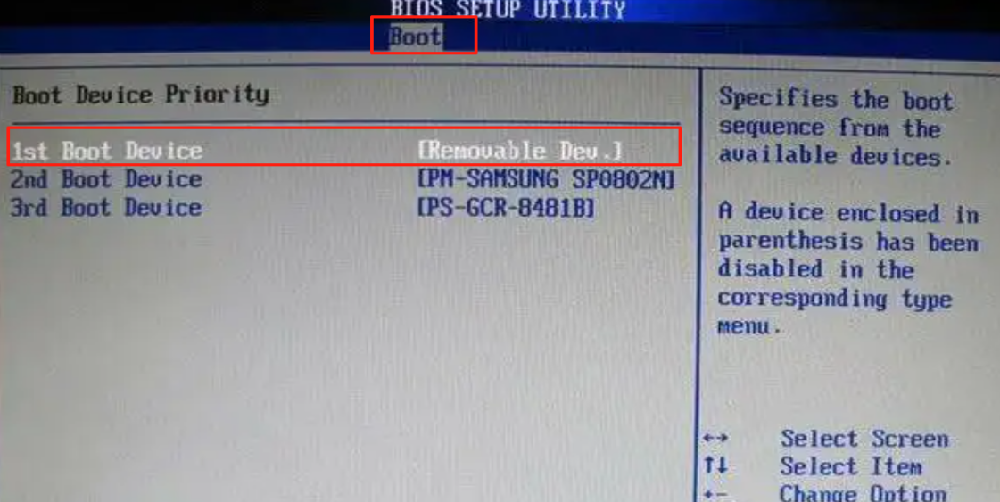
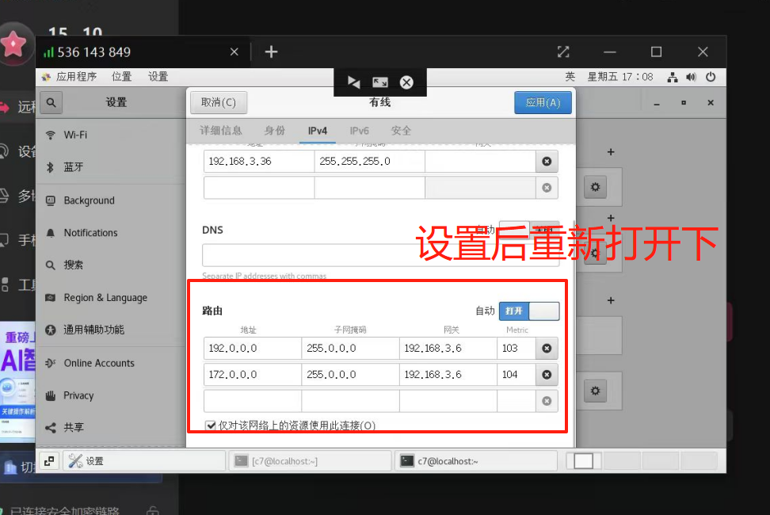
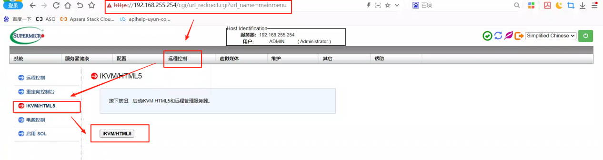
6.6 摄像头播放
摄像头无法播放时的排查步骤：
- 检查是否离线：在设备列表中确认摄像头状态是否为在线
- 检查编码格式：确认摄像头的编码格式(H.264/H.265)是否被网关支持
- 检查子码流：如主码流无法播放，可尝试切换到子码流
- 检查网络连通性：确认网关能访问摄像头的IP地址
- 检查协议配置：确认接入方式(GB28181/ONVIF/RTSP/嵌入式)配置正确
7. 视频网关现场安装调试条件
视频网关现场安装调试前的准备工作。
7.1 基本信息
了解现场的基本信息，包括学校名称、地址、联系人、网络环境等。
7.2 目前汇聚方式
了解当前视频系统的汇聚方式，评估网关接入方案。
7.3 预接入省厅的摄像头信息
收集预接入省厅的摄像头信息。
命名规则：
- 高校：按照高校编码规则命名
- 教育局：按照教育局编码规则命名
摄像头清单（覆盖区域）：
| 序号 | 覆盖区域 | 说明 |
|---|---|---|
| 1 | 校门口 | 学校正门、侧门 |
| 2 | 岗亭 | 门卫岗亭 |
| 3 | 食堂 | 食堂出入口和内部 |
| 4 | 操场 | 操场周边区域 |
| 5 | 主干道 | 校园主要通行道路 |
| 6 | 教学出入口 | 教学楼各出入口 |
| 7 | 宿舍出入口 | 学生宿舍各出入口 |
| 8 | 化学品存放 | 化学品存储区域 |
| 9 | 其他 | 其他需要监控的区域 |
7.4 网关网络环境
确认现场的网络环境，包括网络拓扑、带宽、IP规划、防火墙策略等，确保网关能够正常通信。
8. 视频网关安装
视频网关的完整安装流程和调试步骤。
8.1 设备检查
安装前检查设备外观、接口、电源等是否完好。
- 检查设备外观是否有损坏
- 检查所有接口是否正常
- 检查电源线和网线是否齐全
- 确认设备型号和配置
8.2 了解安装的流程
视频网关安装分为三个阶段：
- 安装前：设备检查、网络规划、信息收集
- 安装中：设备上架、网络连接、系统配置、摄像头接入
- 安装后：功能测试、问题排查、文档归档
8.3 Windows设备调试
Windows系统视频网关设备的调试步骤：
步骤1：设备开机与基本设置
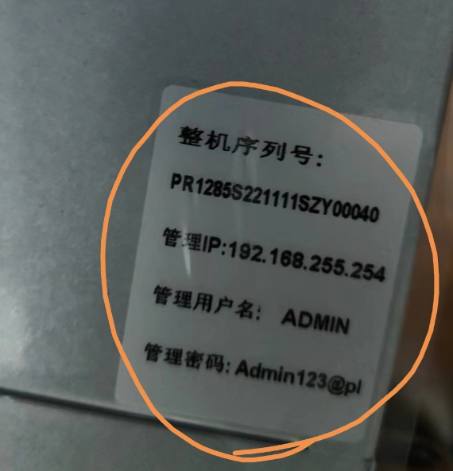
步骤2：网络配置
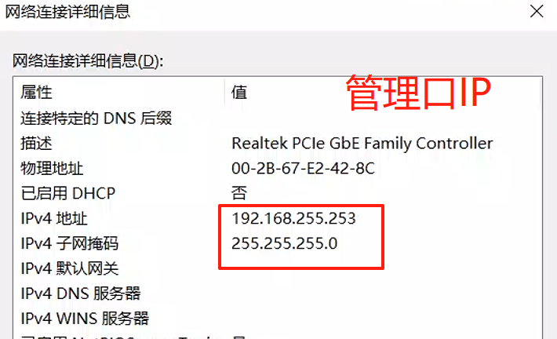
步骤3：防火墙设置
步骤4：服务配置
步骤5：端口配置
步骤6：网关服务启动
步骤7：摄像头接入测试
步骤8：国标对接配置
步骤9：视频预览验证
步骤10：海康AKSK配置
最终确认与调试完成
8.4 照片拍摄
安装完成后，需要拍摄以下照片作为安装记录：
- 设备正面照片
- 设备后面板接线照片
- 设备运行状态截图
- 摄像头在线状态截图
- 视频预览正常截图
9. 产品手册
视频网关产品手册相关图片资料。